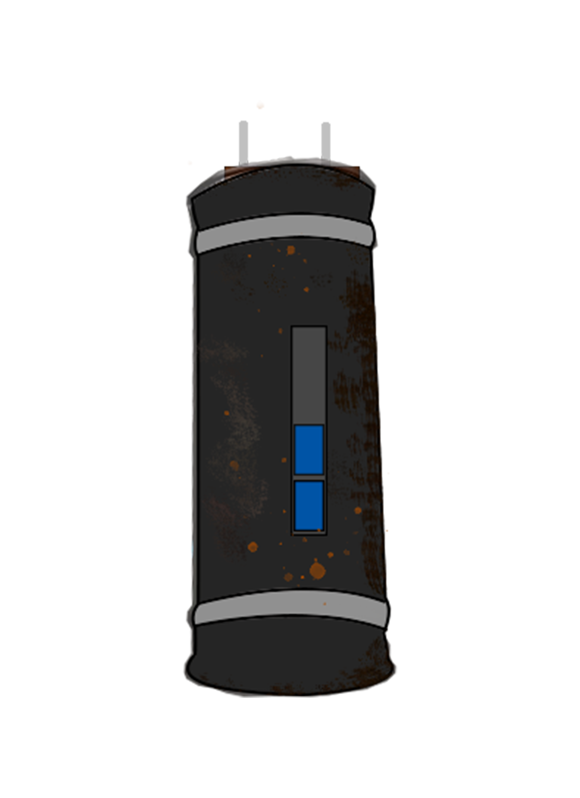

Mécanique
Crafting

Matériaux

Plusieurs matériaux sont récupérés et utilisés pour la construction d'objets qui serviront à la survie d’Olivier dans ce monde dévasté.
Réalisations
Les créations permetteront d’améliorer l’équipement et la construction de machines plus complexes tout au long du jeu.
But - Objectif
Utilisation des compétences du personnage pour récupérer et recycler les déchets, cela dans le but d’assembler la machine à voyager dans le temps.